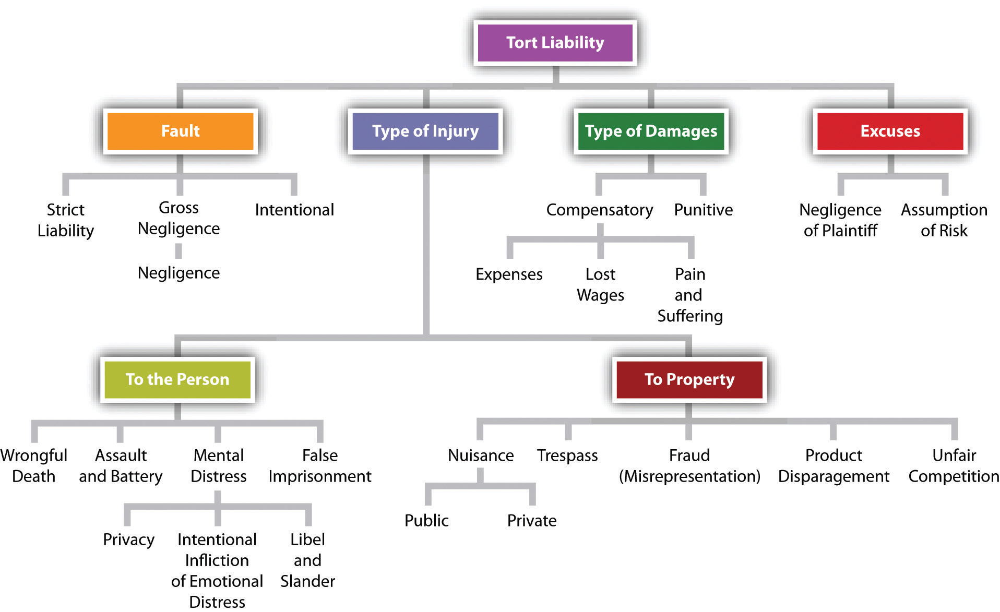

The term tort is the French equivalent of the English word wrong. The word tort is also derived from the Latin word tortum, which means twisted or crooked or wrong, in contrast to the word rectum, which means straight (rectitude uses that Latin root). Thus conduct that is twisted or crooked and not straight is a tort. The term was introduced into the English law by the Norman jurists.
Long ago, tort was used in everyday speech; today it is left to the legal system. A judge will instruct a jury that a tort is usually defined as a wrong for which the law will provide a remedy, most often in the form of money damages. The law does not remedy all “wrongs.” The preceding definition of tort does not reveal the underlying principles that divide wrongs in the legal sphere from those in the moral sphere. Hurting someone’s feelings may be more devastating than saying something untrue about him behind his back; yet the law will not provide a remedy for saying something cruel to someone directly, while it may provide a remedy for "defaming" someone, orally or in writing, to others.
Although the word is no longer in general use, tort suits are the stuff of everyday headlines. More and more people injured by exposure to a variety of risks now seek redress (some sort of remedy through the courts). Headlines boast of multimillion-dollar jury awards against doctors who bungled operations, against newspapers that libeled subjects of stories, and against oil companies that devastate entire ecosystems. All are examples of tort suits.
The law of torts developed almost entirely in the common-law courts; that is, statutes passed by legislatures were not the source of law that plaintiffs usually relied on. Usually, plaintiffs would rely on the common law (judicial decisions). Through thousands of cases, the courts have fashioned a series of rules that govern the conduct of individuals in their noncontractual dealings with each other. Through contracts, individuals can craft their own rights and responsibilities toward each other. In the absence of contracts, tort law holds individuals legally accountable for the consequences of their actions. Those who suffer losses at the hands of others can be compensated.
Many acts (like homicide) are both criminal and tortious. But torts and crimes are different, and the difference is worth noting. A crime is an act against the people as a whole. Society punishes the murderer; it does not usually compensate the family of the victim. Tort law, on the other hand, views the death as a private wrong for which damages are owed. In a civil case, the tort victim or his family, not the state, brings the action. The judgment against a defendant in a civil tort suit is usually expressed in monetary terms, not in terms of prison times or fines, and is the legal system’s way of trying to make up for the victim’s loss.
There are three kinds of torts: intentional torts, negligent torts, and strict liability torts. Intentional torts arise from intentional acts, whereas unintentional torts often result from carelessness (e.g., when a surgical team fails to remove a clamp from a patient’s abdomen when the operation is finished). Both intentional torts and negligent torts imply some fault on the part of the defendant. In strict liability torts, by contrast, there may be no fault at all, but tort law will sometimes require a defendant to make up for the victim’s losses even where the defendant was not careless and did not intend to do harm.
There is a clear moral basis for recovery through the legal system where the defendant has been careless (negligent) or has intentionally caused harm. Using the concepts that we are free and autonomous beings with basic rights, we can see that when others interfere with either our freedom or our autonomy, we will usually react negatively. As the old saying goes, “Your right to swing your arm ends at the tip of my nose.” The law takes this even one step further: under intentional tort law, if you frighten someone by swinging your arms toward the tip of her nose, you may have committed the tort of assault, even if there is no actual touching (battery).
Under a capitalistic market system, rational economic rules also call for no negative externalities. That is, actions of individuals, either alone or in concert with others, should not negatively impact third parties. The law will try to compensate third parties who are harmed by your actions, even as it knows that a money judgment cannot actually mend a badly injured victim.
Figure 7.1 Dimensions of Tort Liability
Tort principles can be viewed along different dimensions. One is the fault dimension. Like criminal law, tort law requires a wrongful act by a defendant for the plaintiff to recover. Unlike criminal law, however, there need not be a specific intent. Since tort law focuses on injury to the plaintiff, it is less concerned than criminal law about the reasons for the defendant’s actions. An innocent act or a relatively innocent one may still provide the basis for liability. Nevertheless, tort law—except for strict liability—relies on standards of fault, or blameworthiness.
The most obvious standard is willful conduct. If the defendant (often called the tortfeasorA person or legal entity that commits a tort.—i.e., the one committing the tort) intentionally injures another, there is little argument about tort liability. Thus all crimes resulting in injury to a person or property (murder, assault, arson, etc.) are also torts, and the plaintiff may bring a separate lawsuit to recover damages for injuries to his person, family, or property.
Most tort suits do not rely on intentional fault. They are based, rather, on negligent conduct that in the circumstances is careless or poses unreasonable risks of causing damage. Most automobile accident and medical malpractice suits are examples of negligence suits.
The fault dimension is a continuum. At one end is the deliberate desire to do injury. The middle ground is occupied by careless conduct. At the other end is conduct that most would consider entirely blameless, in the moral sense. The defendant may have observed all possible precautions and yet still be held liable. This is called strict liabilityLiability without fault. This may arise when the defendant engages in ultrahazardous activities or where defective product creates an unreasonable risk of injury to consumers or others.. An example is that incurred by the manufacturer of a defective product that is placed on the market despite all possible precautions, including quality-control inspection. In many states, if the product causes injury, the manufacturer will be held liable.
Tort liability varies by the type of injury caused. The most obvious type is physical harm to the person (assault, battery, infliction of emotional distress, negligent exposure to toxic pollutants, wrongful death) or property (trespass, nuisance, arson, interference with contract). Mental suffering can be redressed if it is a result of physical injury (e.g., shock and depression following an automobile accident). A few states now permit recovery for mental distress alone (a mother’s shock at seeing her son injured by a car while both were crossing the street). Other protected interests include a person’s reputation (injured by defamatory statements or writings), privacy (injured by those who divulge secrets of his personal life), and economic interests (misrepresentation to secure an economic advantage, certain forms of unfair competition).
A third element in the law of torts is the excuse for committing an apparent wrong. The law does not condemn every act that ultimately results in injury.
One common rule of exculpation is assumption of riskA defense to a plaintiff’s action in tort where the plaintiff has knowingly and voluntarily entered into a risky activity that results in injury.. A baseball fan who sits along the third base line close to the infield assumes the risk that a line drive foul ball may fly toward him and strike him. He will not be permitted to complain in court that the batter should have been more careful or that management should have either warned him or put up a protective barrier.
Another excuse is negligence of the plaintiff. If two drivers are careless and hit each other on the highway, some states will refuse to permit either to recover from the other. Still another excuse is consent: two boxers in the ring consent to being struck with fists (but not to being bitten on the ear).
Since the purpose of tort law is to compensate the victim for harm actually done, damages are usually measured by the extent of the injury. Expressed in money terms, these include replacement of property destroyed, compensation for lost wages, reimbursement for medical expenses, and dollars that are supposed to approximate the pain that is suffered. Damages for these injuries are called compensatory damagesAn award of money damages to make the plaintiff whole, as opposed to additional damages (punitive) that punish the defendant or make an example of defendant..
In certain instances, the courts will permit an award of punitive damagesPunitive damages are awarded in cases where the conduct of the defendant is deemed to be so outrageous that justice is only served by adding a penalty over and above compensatory damages.. As the word punitive implies, the purpose is to punish the defendant’s actions. Because a punitive award (sometimes called exemplary damages) is at odds with the general purpose of tort law, it is allowable only in aggravated situations. The law in most states permits recovery of punitive damages only when the defendant has deliberately committed a wrong with malicious intent or has otherwise done something outrageous.
Punitive damages are rarely allowed in negligence cases for that reason. But if someone sets out intentionally and maliciously to hurt another person, punitive damages may well be appropriate. Punitive damages are intended not only to punish the wrongdoer, by exacting an additional and sometimes heavy payment (the exact amount is left to the discretion of jury and judge), but also to deter others from similar conduct. The punitive damage award has been subject to heavy criticism in recent years in cases in which it has been awarded against manufacturers. One fear is that huge damage awards on behalf of a multitude of victims could swiftly bankrupt the defendant. Unlike compensatory damages, punitive damages are taxable.
There are three kinds of torts, and in two of them (negligent torts and strict liability torts), damages are usually limited to making the victim whole through an enforceable judgment for money damages. These compensatory damages awarded by a court accomplish only approximate justice for the injuries or property damage caused by a tortfeasor. Tort laws go a step further toward deterrence, beyond compensation to the plaintiff, in occasionally awarding punitive damages against a defendant. These are almost always in cases where an intentional tort has been committed.